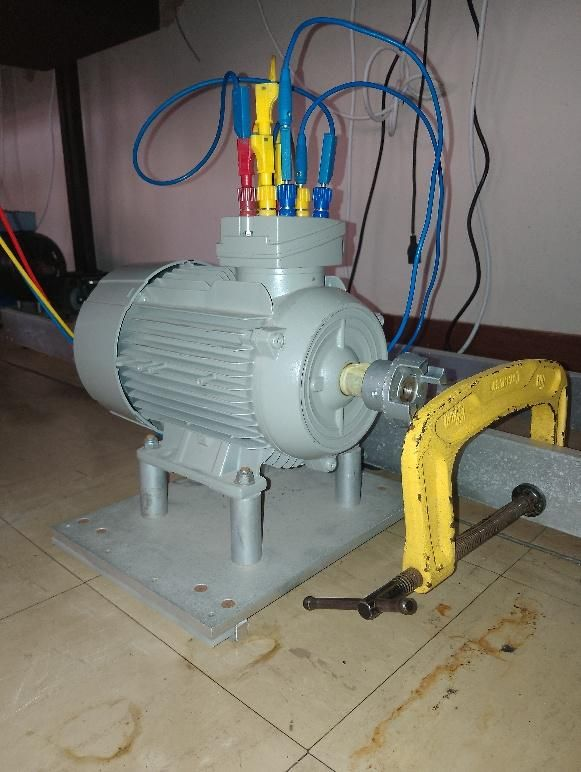
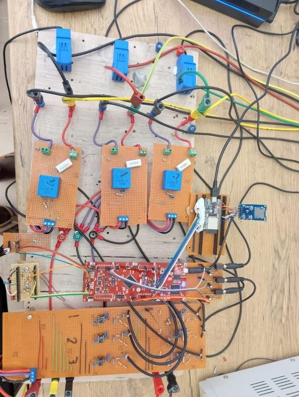
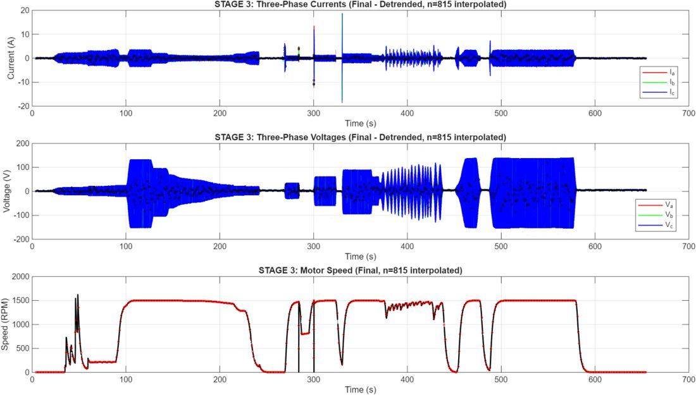
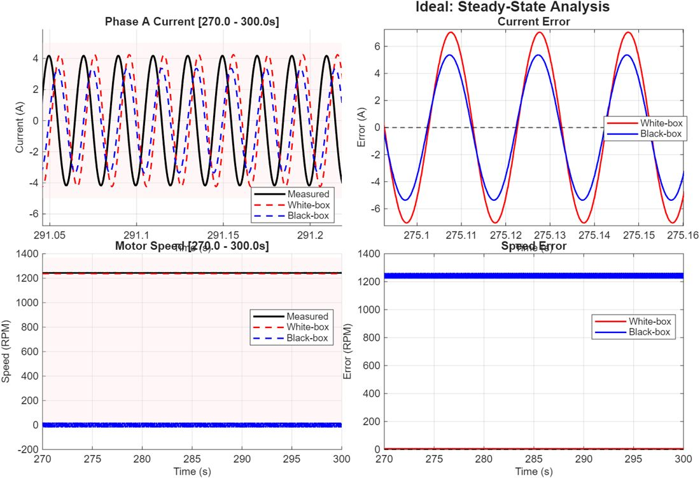

The question
Digital twins promise a live virtual copy of a machine that you can use to predict faults or test changes safely. But there are two very different ways to build one. You can write down the physics, or you can let a model learn the behaviour from measurements. I wanted to know which one actually holds up when it has to track a real motor in real time.


Getting honest data out of a noisy machine
Before any model could be trusted, the measurements had to be. A TI C2000 DSP sampled three voltages, three currents, speed and temperature at 2 kHz. The first voltage readings swung 15 to 20% from noise alone. Second-order anti-aliasing filters, a single star-point ground, shielded cables and isolated sensor boards brought that down to about 2%.
The next problem was quieter and worse. Data was streamed over UART to an ESP32 for logging, and three packets in every four were silently lost at the data rate the project needed. I moved the link to SPI, with the DSP in charge of timing, and valid capture went from about 25% to about 98%.
Two models of the same machine
The physics model came from the textbook equations of an induction motor, with parameters measured on the real machine through standard DC, locked-rotor and no-load tests. The data model came from system identification: I drove the motor through four designed excitation profiles, collected over a million samples, and fitted a seventh-order state-space model that matched 97% of the training data.

What the motor revealed
Comparing both models against the motor raised a problem: a model can look wrong because the model is wrong, or because the sensors are. So I tested each model twice, once against real measurements and once against clean signals from an ideal reference machine. That separated measurement error from modelling error.

Each model failed in a different place. The physics model predicted the starting current surge within 9.1%, but drifted badly once it was fed imperfect real data. The data model stayed within 6.4% in steady running but could not reproduce the fast transients it had rarely seen in training.
What I would build next
The obvious next step is a hybrid: keep the physics as the backbone, and let the data correct its parameters as the machine runs, using an extended Kalman filter. More broadly, the project taught me that the hard part of putting intelligence into machines is rarely the model. It is the gap between the model and the hardware.